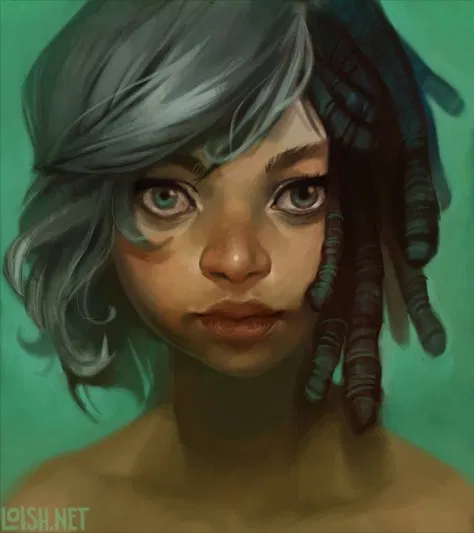

Lois van Baarle |
Lois van Baarle es una ilustradora digital que también trabaja la animación nacida en Ultrecht, Holanda, el 11 de octubre de 1985. Ella ha estado dibujando desde que podía sostener un lápiz. Comenzó a dibujar digitalmente con un ratón a los 15 años, y obtuvo su primera tableta a los 16, después de pasar la mayor parte de su tiempo libre con el dibujo digital. Es autodidacta. A los 18 años decide estudiar animación en la universidad. durante un año lo hará en Ghent (Bélgica) y luego se trasladará de nuevo a su país de origen para estudiar en la Hogeschool voor de Kunsten Utrecht (HKU) en Hilversum. A pesar de que nació en Holanda y tiene nacionalidad holandesa, ha vivido por todo el mundo, incluyendo Estados Unidos, Indonesia, Francia y Bélgica. Sin embargo sus estudios de animación en la Universidad no le enseñarán mucho acerca del dibujo (aparte de la influencia que la animación naturalmente tiene en alguien que dibuja), así que ella misma irá aprendiendo como hacerlo a base de practicar y practicar. La imágenes que ve por internet, las películas o los dibujos animados son algunas de sus fuentes de inspiración. Pero son los colores, o la combinación de colores lo que normalmente le dan una idea para hacer un dibujo o le motivan para un proceso de dibujo. Lois cuenta que a los 15 años se inspiraba en el estilo de dibujo japonés (anime y manga), así como en varios artistas cómicos franceses (particularmente Aurore BlackCat). También en el Art Noveau (en particular Alfonse Mucha), pero tras unirse a deviantArt pasó a inspirarse por una amplia gama de artistas que pueblan el sitio, en su mayoría pinturas digitales. |
|
Lois van Baarle trabaja como freelance y es muy activa en la red. Además de su página web y en devianArt, también la encontramos en Behance, en CG Society, tiene un estupendo blog particular y por supuesto Facebook y Twitter. Su trabajo en animación, nada despreciable y que podéis ver en su web y en su página de Vimeo con cosas suficientemente interesantes para darse una vuelta por ella |
|